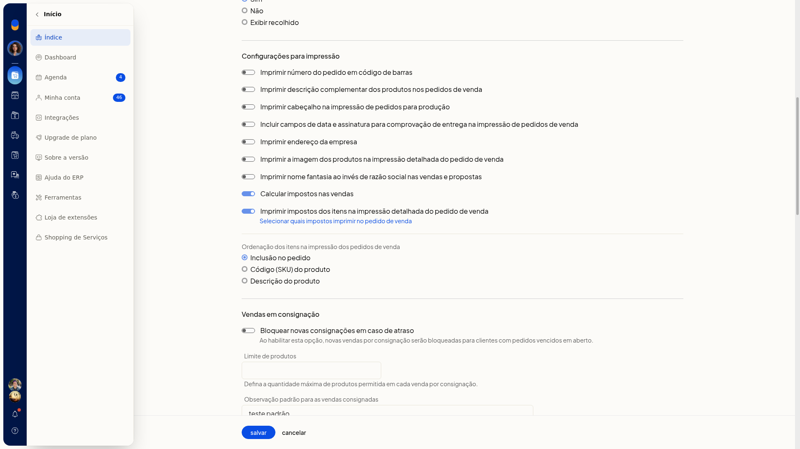

Imprimir o pedido de venda
No ERP da Olist, você imprime o pedido de venda a partir da lista de pedidos. No menu do pedido, também dá para salvar o pedido em PDF, imprimir o carnê, imprimir o pedido para produção e imprimir a etiqueta com um clique.
Instruções
-
Acesse Vendas > Pedidos de Venda.
-
Localize o pedido na lista.
-
Abra o menu ••• desse pedido.

-
Clique em Imprimir, Salvar em PDF, Imprimir carnê, Imprimir pedido para produção ou Imprimir etiqueta com um clique.
Informações adicionais
A impressão segue as opções dos pedidos de venda
Em Configurações > Configurações ERP > Vendas > Configurações dos pedidos de venda, estas opções definem o que entra na impressão:
- Imprimir número do pedido em código de barras
- Imprimir descrição complementar dos produtos nos pedidos de venda
- Imprimir cabeçalho na impressão de pedidos para produção
- Incluir campos de data e assinatura para comprovação de entrega na impressão de pedidos de venda
- Imprimir endereço da empresa
- Imprimir a imagem dos produtos na impressão detalhada do pedido de venda
- Imprimir nome fantasia ao invés de razão social nas vendas e propostas
- Calcular impostos nas vendas
- Imprimir impostos dos itens na impressão detalhada do pedido de venda: selecione quais impostos imprimir no pedido de venda
- Ordenação dos itens na impressão dos pedidos de venda: Inclusão no pedido, Código (SKU) do produto ou Descrição do produto
